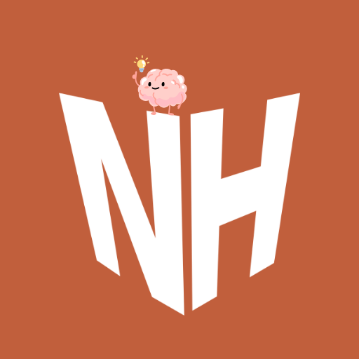

Your neurochemical activity across this week. Spot patterns and understand what a strong day looks like for your brain.
Consecutive days you activated each neurochemical system. See where you're consistent and where you need more focus.
Your best recorded moments — tracked automatically as you use the app each day.
Today's neurochemical shape at a glance. A balanced brain shows an even polygon — lopsided shapes reveal which systems need attention.
Pattern analysis, habit correlations, and proactive nudges based on your actual data — not generic advice.
Drive, motivation & reward pathway.
Mood stability, regulation & balance.
Connection, trust & social bonding.
Movement, stress relief & recovery.
Unlock the full picture of your neurochemical performance — trends, history, and personalised coaching.
Your brain phase reflects the proportion of foundational core habits completed today. Completing at least 50% of core habits across all four categories activates Phase 3 — Foundation Active.
Raw % = (completed habit weights ÷ total possible) × 100.
Foundational Gate: Any single ⭐⭐⭐ habit unlocks the full gauge. Until then, gauge is capped at 50%.
Serotonin exception: Has 3 foundational habits — completing ANY ONE of them unlocks the full gauge.
Flex Mode: Long-press or tap Flex to reduce a habit's weight on harder days.
Brain Phase = foundational habit completion rate across all four neurochemical categories.